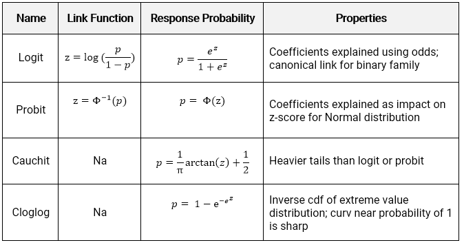
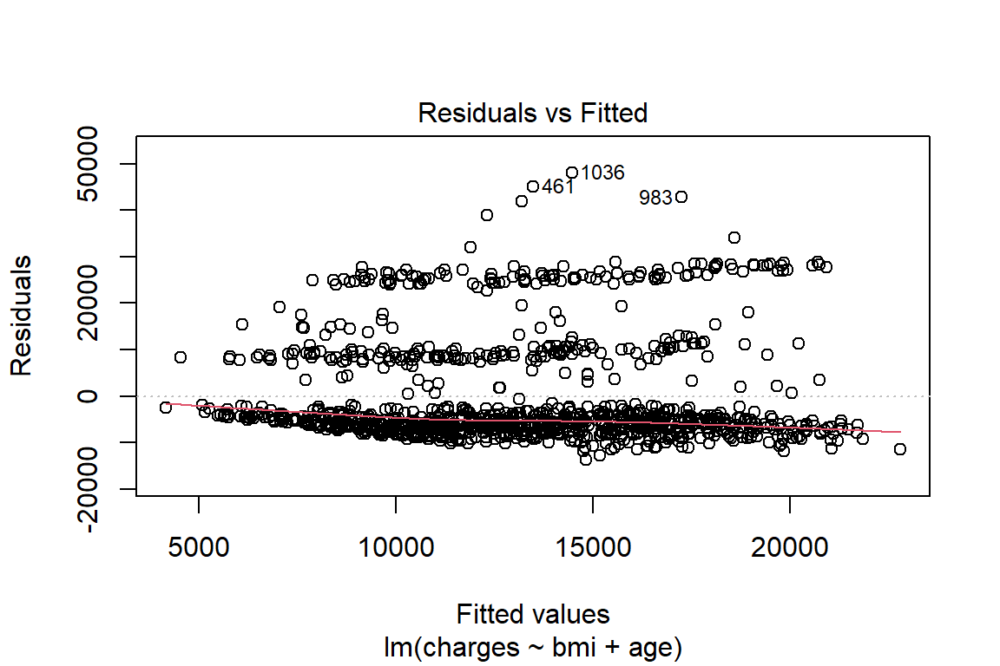

10 GLMs for classification
For classification, the predicted values need to be a category instead of a number. Using a discrete target distribution ensures that this will be the case. The probability of an event occurring is \(E[Y] = p\). Unlike the continuous case, all of the link functions have the same range between 0 and 1 because this is a probability.
These StatQuest videos explain the most common type of GLM classification model: Logistic regression.
10.1 Binary target
When \(Y\) is binary, then the Binomial distribution is the only choice. If there are multiple categories, then the Multinomial should be used.
10.2 Count target
When \(Y\) is a count, the Poisson distribution is the only choice. Two examples are counting the number of claims a policy has in a given year or counting the number of people visiting the ER in a given month. The key ingredients are 1) some events and 2) some fixed periods.
Statistically, the name for this is a Poisson Process, which describes a series of discrete events where the average time between events is known, called the “rate” \(\lambda\), but the exact timing of events is unknown. For a time interval of length \(m\), the expected number of events is \(\lambda m\).
By using a GLM, we can fit a different rate for each observation. In the ER example, each patient would have a different rate. Those who are unhealthy or who work in risky environments would have a higher rate of ER visits than those who are healthy and work in offices.
\[Y_i|X_i \sim \text{Poisson}(\lambda_i m_i)\]
When all observations have the same exposure, \(m = 1\). When the mean of the data is far from the variance, an additional parameter known as the dispersion parameter is used. A classic example is when modeling insurance claim counts, which have a lot of zero claims. Then the model is said to be an “over-dispersed Poisson” or “zero-inflated” model.
10.3 Link functions
There are four link functions. The most common are the Logit and Probit, but the Cauchit and Cloglog did appear on the Hospital Readmissions practice exam of SOA in 2019. The identity link does not make sense for classification because it would result in predictions being outside of \((0,1)\)

The logit is also known as the standard logistic function or sigmoid and is also used in deep learning.
Below we see how the linear predictor (x-axis) gets converted to a probability (y-axis).

- Logit: Most commonly used; default in R; canonical link for the binomial distribution.
- Probit: Sharper curves than the other links which may have best performance for certain data; Inverse CDF of a standard normal distribution makes it easy to explain.
- Cauchit: Very gradual curves may be best for certain data; CDF for the standard Cauchy distribution which is a t distribution with one degree of freedom.
- Complimentary Log-Log (cloglog) Asymmetric; Important in survival analysis (not on this exam).
10.4 Interpretation of coefficients
Interpreting the coefficients in classification is trickier than in classification because the result must always be within \((0,1)\).
10.4.1 Logit
The link function \(log(\frac{p}{1-p})\) is known as the log-odds, where the odds are \(\frac{p}{1-p}\). These come up in gambling, where bets are placed on the odds of some event occurring. For example: if the probability of a claim is \(p = 0.8\), then the probability of no claim is 0.2 and the odds of a claim occurring are 0.8/0.2 = 4.
The transformation from probability to odds is monotonic. This is a fancy way of saying that if \(p\) increases, then the odds of \(p\) increases as well, and vice versa if \(p\) decreases. The log transform is monotonic as well.
The net result is that when a variable increases the linear predictor, this increases the log odds, increasing the log of the odds, and vice versa if the linear predictor decreases. In other words, the signs of the coefficients indicate whether the variable increases or decreases the probability of the event.
10.4.2 Probit, Cauchit, Cloglog
These link functions are still monotonic, so the sign of the coefficients can be interpreted to mean that the variable has a positive or negative impact on the target.
More extensive interpretation is not straightforward. In the case of the Probit, instead of dealing with the log-odds function, we have the inverse CDF of a standard Normal distribution (a.k.a., a Gaussian distribution with mean 0 and variance 1). There is no way of taking this inverse directly.
10.5 Demo the model for interpretation
For uglier link functions, we can rely on trial-and-error to interpret the result. We will call this the “model-demo method, " which, as the name implies, involves running example cases and seeing how the results change.
This method works not only for categorical GLMs, but any other type of models such as a continuous GLM, GBM, or random forest.
See the example from SOA PA 12/12/19 below to learn how this works.
10.6 Example - Auto Claims
Using the auto_claim data, we predict whether or not a policy has a claim. This is also known as the claim frequency.
auto_claim %>% count(CLM_FLAG)## # A tibble: 2 x 2
## CLM_FLAG n
## <chr> <int>
## 1 No 7556
## 2 Yes 2740About 40% do not have a claim while 60% have at least one claim.
set.seed(42)
index <- createDataPartition(y = auto_claim$CLM_FLAG,
p = 0.8, list = F) %>% as.numeric()
auto_claim <- auto_claim %>%
mutate(target = as.factor(ifelse(CLM_FLAG == "Yes", 1,0)))
train <- auto_claim %>% slice(index)
test <- auto_claim %>% slice(-index)
frequency <- glm(target ~ AGE + GENDER + MARRIED + CAR_USE +
BLUEBOOK + CAR_TYPE + AREA,
data=train,
family = binomial(link="logit"))All of the variables except for the CAR_TYPE and GENDERM are highly significant. The car types SPORTS CAR and SUV appear to be significant, and so if we wanted to make the model simpler we could create indicator variables for CAR_TYPE == SPORTS CAR and CAR_TYPE == SUV.
frequency %>% summary()##
## Call:
## glm(formula = target ~ AGE + GENDER + MARRIED + CAR_USE + BLUEBOOK +
## CAR_TYPE + AREA, family = binomial(link = "logit"), data = train)
##
## Deviance Residuals:
## Min 1Q Median 3Q Max
## -1.8431 -0.8077 -0.5331 0.9575 3.0441
##
## Coefficients:
## Estimate Std. Error z value Pr(>|z|)
## (Intercept) -3.523e-01 2.517e-01 -1.400 0.16160
## AGE -2.289e-02 3.223e-03 -7.102 1.23e-12 ***
## GENDERM -1.124e-02 9.304e-02 -0.121 0.90383
## MARRIEDYes -6.028e-01 5.445e-02 -11.071 < 2e-16 ***
## CAR_USEPrivate -1.008e+00 6.569e-02 -15.350 < 2e-16 ***
## BLUEBOOK -4.025e-05 4.699e-06 -8.564 < 2e-16 ***
## CAR_TYPEPickup -6.687e-02 1.390e-01 -0.481 0.63048
## CAR_TYPESedan -3.689e-01 1.383e-01 -2.667 0.00765 **
## CAR_TYPESports Car 6.159e-01 1.891e-01 3.256 0.00113 **
## CAR_TYPESUV 2.982e-01 1.772e-01 1.683 0.09240 .
## CAR_TYPEVan -8.983e-03 1.319e-01 -0.068 0.94569
## AREAUrban 2.128e+00 1.064e-01 19.993 < 2e-16 ***
## ---
## Signif. codes: 0 '***' 0.001 '**' 0.01 '*' 0.05 '.' 0.1 ' ' 1
##
## (Dispersion parameter for binomial family taken to be 1)
##
## Null deviance: 9544.3 on 8236 degrees of freedom
## Residual deviance: 8309.6 on 8225 degrees of freedom
## AIC: 8333.6
##
## Number of Fisher Scoring iterations: 5The signs of the coefficients tell if the probability of having a claim is either increasing or decreasing by each variable. For example, the likelihood of an accident
- Decreases as the age of the car increases
- Is lower for men
- Is higher for sports cars and SUVs
The p-values tell us if the variable is significant.
Age,MarriedYes,CAR_USEPrivate,BLUEBOOK, andAreaUrbanare significant.- Certain values of
CAR_TYPEare significant but others are not.
The output is a predicted probability. We can see that this is centered around a probability of about 0.3.
preds <- predict(frequency, newdat=test,type="response")
qplot(preds) Figure 10.1: Distribution of Predicted Probability
In order to convert these values to predicted 0’s and 1’s, we assign a cutoff value so that if \(\hat{y}\) is above this threshold we use a 1 and 0 otherwise. The default cutoff is 0.5. We change this to 0.3 and see that there are 763 policies predicted to have claims.
test <- test %>% mutate(pred_zero_one = as.factor(1*(preds>.3)))
summary(test$pred_zero_one)## 0 1
## 1296 763How do we decide on this cutoff value? We need to compare cutoff values based on some evaluation metrics. For example, we can use accuracy.
\[\text{Accuracy} = \frac{\text{Correct Guesses}}{\text{Total Guesses}}\]
This results in an accuracy of 70%. But is this good?
test %>% summarise(accuracy = mean(pred_zero_one == target))## # A tibble: 1 x 1
## accuracy
## <dbl>
## 1 0.699Consider what would happen if we just predicted all 0’s. The accuracy is 74%.
test %>% summarise(accuracy = mean(0 == target))## # A tibble: 1 x 1
## accuracy
## <dbl>
## 1 0.734For policies which experience claims the accuracy is 63%.
test %>%
filter(target == 1) %>%
summarise(accuracy = mean(pred_zero_one == target))## # A tibble: 1 x 1
## accuracy
## <dbl>
## 1 0.631But for policies that don’t actually experience claims this is 72%.
test %>%
filter(target == 0) %>%
summarise(accuracy = mean(pred_zero_one == target))## # A tibble: 1 x 1
## accuracy
## <dbl>
## 1 0.724How do we know if this is a good model? We can repeat this process with a different cutoff value and get different accuracy metrics for these groups. Let us use a cutoff of 0.6.
75%
test <- test %>% mutate(pred_zero_one = as.factor(1*(preds>.6)))
test %>% summarise(accuracy = mean(pred_zero_one == target))## # A tibble: 1 x 1
## accuracy
## <dbl>
## 1 0.75210% for policies with claims and 98% for policies without claims.
test %>%
filter(target == 1) %>%
summarise(accuracy = mean(pred_zero_one == target))## # A tibble: 1 x 1
## accuracy
## <dbl>
## 1 0.108test %>%
filter(target == 0) %>%
summarise(accuracy = mean(pred_zero_one == target))## # A tibble: 1 x 1
## accuracy
## <dbl>
## 1 0.985The punchline is that the accuracy depends on the cutoff value, and changing the cutoff value changes whether the model is accurate for the “true = 1” classes (policies with actual claims) vs. the “false = 0” classes (policies without claims).